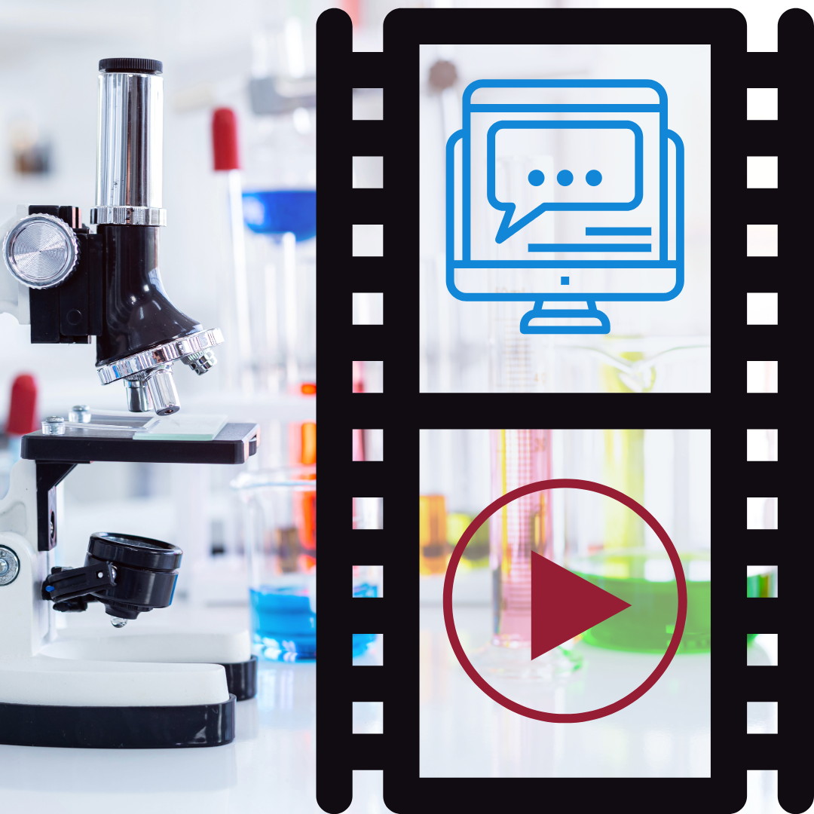

"We Lied to You...And We'll Do It Again"
— Communicating Science Via YouTube
by Sarah Young, Simone Driessen, and Jason Pridmore
Erasmus University Rotterdam, School of History, Culture, and Communication
Webtext Development by Teresa Davis, University of Arizona
Introduction
There are many guides and examples regarding how to create effective science communication (e.g., Fähnrich, 2021; Hutchins, 2020). However, the steps for creating such communication pieces are often complex, but suggestions often offer only simplified sets of instructions. This is especially the case for emerging mediums and methods for science communication as they often involve exciting and useful digital developments that simultaneously bring along new challenges and blind spots (Fähnrich, 2021).
One of these blind spots is that trending practices and recommendations do not always allow for a focus on the long-term view, something we call the “long tail” of science communication. This “long- tail” recognizes that current practices and science communication offerings can prevail long beyond an initial encounter. Such moments can even prompt particular audience members to significantly alter what would have been a very different life.
We take this long tail-focus by examining audience engagement with the YouTube video “…And We’ll Do it Again,” by the German media company Kurzgesagt. Their English YouTube channel, created in 2013, explores SciComm topics through animation with almost 20 million subscribers. This video, which visibly shows the words “WE LIED TO YOU” in the preview thumbnail next to the actual title of “ ... And We’ll Do it Again”, describes this “lying” as telling complicated scientific stories in a simplified manner. This particular video was developed in conjunction with a large science communication project called Trustworthy, Reliable and Engaging Scientific Communication Approaches (TRESCA). TRESCA was a collaboration between six institutions across Europe, including two of the three authors and members of Kurzgesagt. The project focused on addressing disinformation and the distrust of the media, including science communication outlets. Motivated by the goal of “understanding how science communication can help rebuild trust in science and scientific experts,” the TRESCA project was responsible for creating a video with help from Kurzgesagt that addressed the science communication process as a form of cocreation. The project reporting includes this Kurzgesagt video explaining the process of science communication from Kurzgesagt’s viewpoint and the preparation materials behind this video (see Trustworthy, Reliable and Engaging Scientific Communication Approaches, 2023)
After the completion of the video, we sought to understand how the audience reacted to it. We wanted to know if and how such engagement can help us understand science communication further. To understand this, we examined audience responses in the video comments, which, while normally seen as less helpful on YouTube, proved to give some insights into the lives of its audience. We reflected specifically on the video's top fifty comments received. The video itself was in fact not like the normal videos for this company. It was an important self-reflective moment for Kurzgesagt, and as such, gave insight not only into the company processes, but also into people’s experiences of the channel and science communication in general. Willing to explore these different factors, we introduce two guiding questions: First, how did the audience react to this video? And second, how might the engagement with this video be important or impactful for science communication?
Based on these unique findings, we argue that consideration in science communication on social media needs to be made in terms of not only thinking about the immediate production, but the long-term, long tail of prevailing value such work has on a viewer long after an initial view. This perspective adds to existing scholarship on practical production and engagement recommendations for science communication but also extends the conversation when thinking about its long-term potential. Both are important elements to contribute to in today’s fast-paced (social) media landscape. Moreover, this might help highlight how digital media provide opportunities like opening up access to scientific sources, new ways and spaces to communicate and interact, and a potential to diversify who are involved and engage in science communication (Fähnrich, 2021).